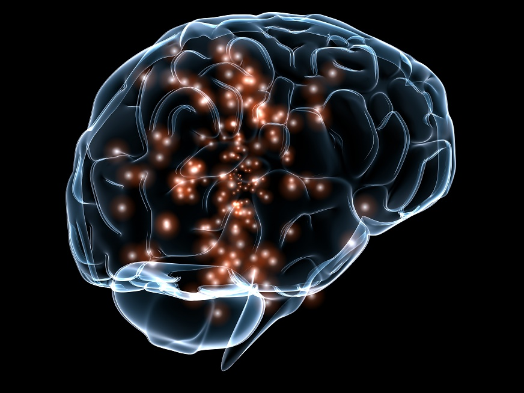
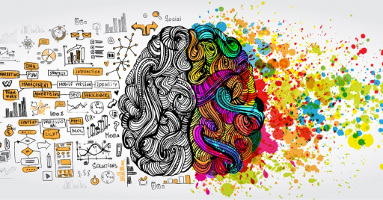

Neurología

Bostezando New
¿Qué significa un bostezo?
Según un estudio realizado por Gary Hack de la Universidad de la Facultad de odontología de Maryland...
Neurología

Epilepsia New
¿Qué sucede durante una convulsión?
Las convulsiones se producen por un patrón característico de actividad neuronal. Esta actividad neuronal es...
Neurología

Duerme New
¿Qué sucede cuando duermo?
Mientras estamos despiertos nuestro cerebro activa neurotransmisores que nos permite comunicarnos ...
Neurología

Aprendiendo placer Proximamente
Te emociona aprender algo nuevo?
....
Neurología
Modificando recuerdos Proximamente
Matame ese triste recuerdo
Información desconocida.
Historia
Proximamente
Información desconocida.